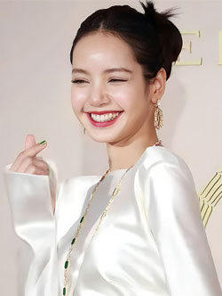
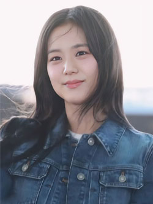

Integrantes
-

Jennie
Jennie Kim, nacida el 16 de enero de 1996, conocida como Jennie, es una cantante, rapera y actriz de Corea del Sur. Creció en su país natal y luego pasó cinco años estudiando en Nueva Zelanda antes de regresar en 2010. En agosto de 2016, fue confirmada como la primer miembro de BLACKPINK. En 2023, hizo su debut actoral bajo el nombre artístico de Jennie Ruby Jane en la serie de televisión de HBO The Idol. Su estilo único y versatilidad han consolidado su estatus como una de las figuras más influyentes en la música y la moda, siendo reconocida como la Human Chanel y demostrando un impacto duradero en la escena del entretenimiento global.
-
Lisa
Lalisa Manobal, también conocida como Lisa, nació como Pranpriya Manobal, Tailandia el 27 de marzo de 1997. Es una talentosa rapera, cantante, bailarina y actriz, En Agosto del 2016, fue confirmada como la segunda miembro de BLACKPINK. Lisa es también una figura reconocida con múltiples logros, incluidos ocho Guinness World Records y diversos premios musicales. Además, fundó su propia empresa de gestión, Lloud, y firmó con RCA Records en 2024. Lisa es una embajadora cultural destacada de Tailandia. Su influencia en las redes sociales la ha convertido en la artista de K-pop más seguida, destacando su impacto global y su compromiso con la promoción cultural.
 -

Jisoo
Kim Jisoo, conocida como Jisoo, nació el 3 de enero de 1995 en Gunpo, Corea del Sur. Es una destacada cantante, actriz, modelo, bailarina y presentadora de televisión surcoreana. Jisoo se unió a YG Entertainment en 2011 como aprendiz y dedicó cinco años de entrenamiento antes de debutar con BLACKPINK, como la tercer integrante, en agosto de 2016. Jisoo también es reconocida como embajadora global de marcas de lujo y ha protagonizado múltiples campañas publicitarias. Su elegancia y estilo la han posicionado como un ícono de la moda en la industria del entretenimiento coreano. Es admirada por su versatilidad y talento, como una influyente figura en la cultura y el entretenimiento a nivel internacional.
-
Rosé
Roseanne Park, conocida artísticamente como Rosé, nació el 11 de febrero de 1997 en Nueva Zelanda. Criada en Australia, es una destacada cantante y bailarina de origen coreano-neozelandés. Tras una exitosa audición en 2012, Rosé firmó con la agencia surcoreana YG Entertainment, donde se entrenó durante cuatro años antes de debutar como la cuarta miembro de BLACKPINK en agosto de 2016. Rosé ha recibido numerosos premios, incluyendo dos Guinness World Records, un Hanteo Music Award y un Mnet Asian Music Award. Es la tercera personalidad coreana más seguida en Instagram y ha sido reconocida como icono de moda, siendo embajadora global de Yves Saint Laurent.